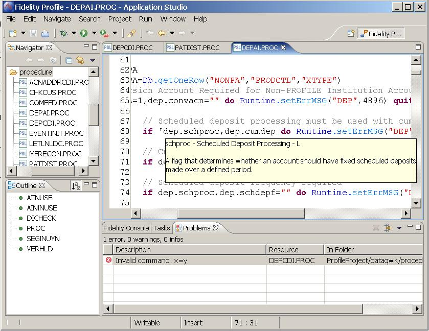
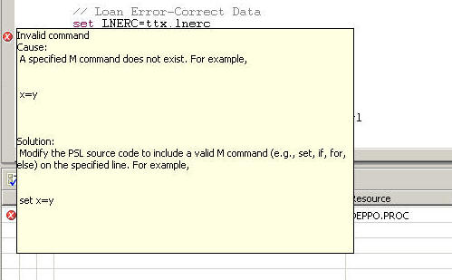
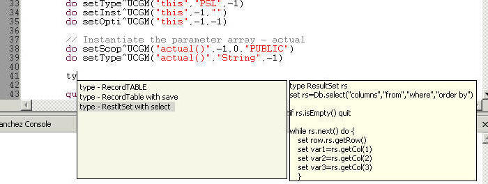
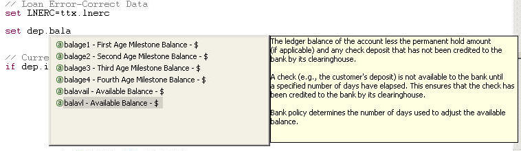
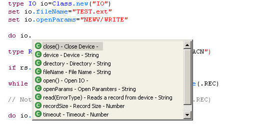
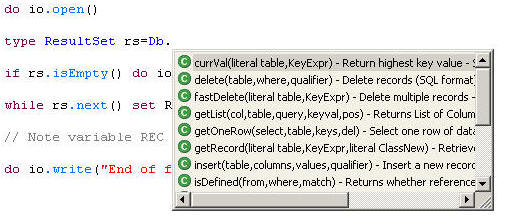
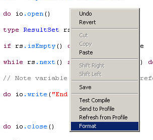

The Fidelity Application Studio has an editor specifically designed for coding PSL programs.

Compile errors and warnings are displayed as Problems in the "Problems" view. Double clicking on the Problem will jump the curser to the line of the warning or error.
When the cursor is on a line of code with a compile warning or error, pop-up help can be displayed hovering over the error marker (red X) in the margin.

PSL Snippets are available in the PSL editor via Ctrl+Space or through the menu path Edit -> Content Assist. When you invoke the PSL snippets, the list of snippets is filtered based on the characters to the left of the cursor. For example, if you type an f and then Ctrl+Space, you will be presented with a list of snippets that begin with f. if you continue to type, the list will shorten to match the characters to the left to the cursor.
You can use the arrow keys to browse through the list. If you leave the selection highlighted for more than a fraction of a second, the contents of the snippet pop-up next to the look-up table. To insert the snippet code into your program, highlight the desired snippet and press enter.
Notice the characters ty to the left of the cursor.

When using classes and instance variables in PSL a pop-up lookup table will appear 500 milliseconds after typing the dot separator. For example, if you have and instance of RecordDEP named dep, after typing "dep." you will get the lookup table of all columns in the DEP table. After another 500 mille seconds, the help documentation for the highlighted column appears.

You can continue to type to narrow the scope of the lookup table. If the lookup table disappears you can re-display it by pressing Ctrl+Space. Note, your cursor must immediately to the right of the dot or a portion of the column name.
Methods and properties are available in the lookup tables for all PSL Classes and instance variables.
Instance method example

Class method example

The Format function in the right click menu will clean up white space and structured blocks.
